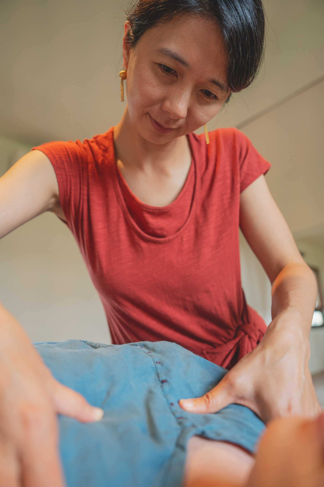
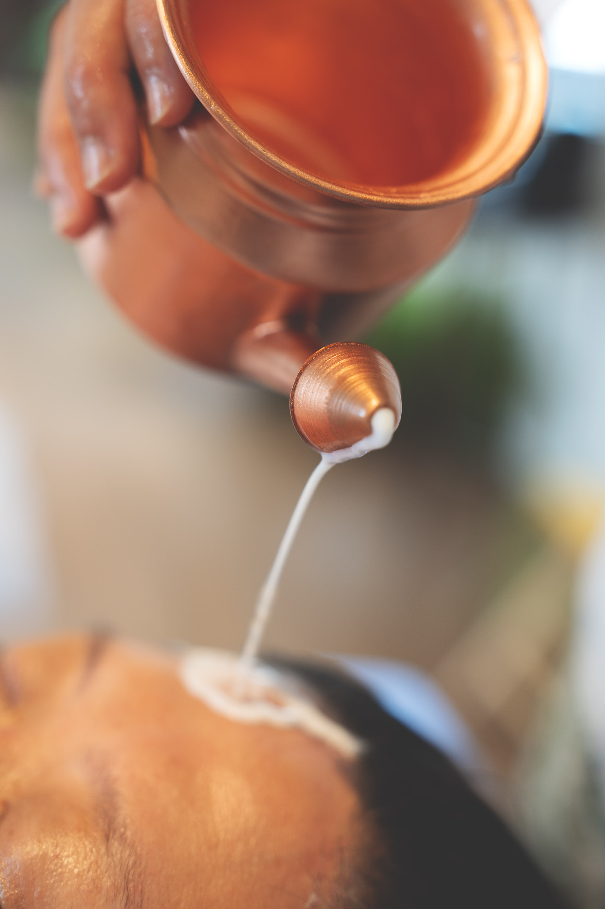
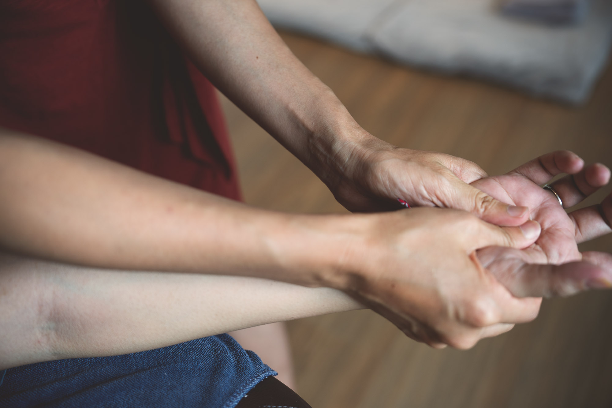
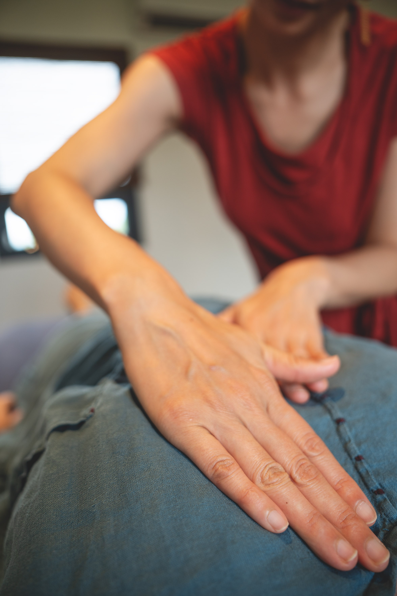
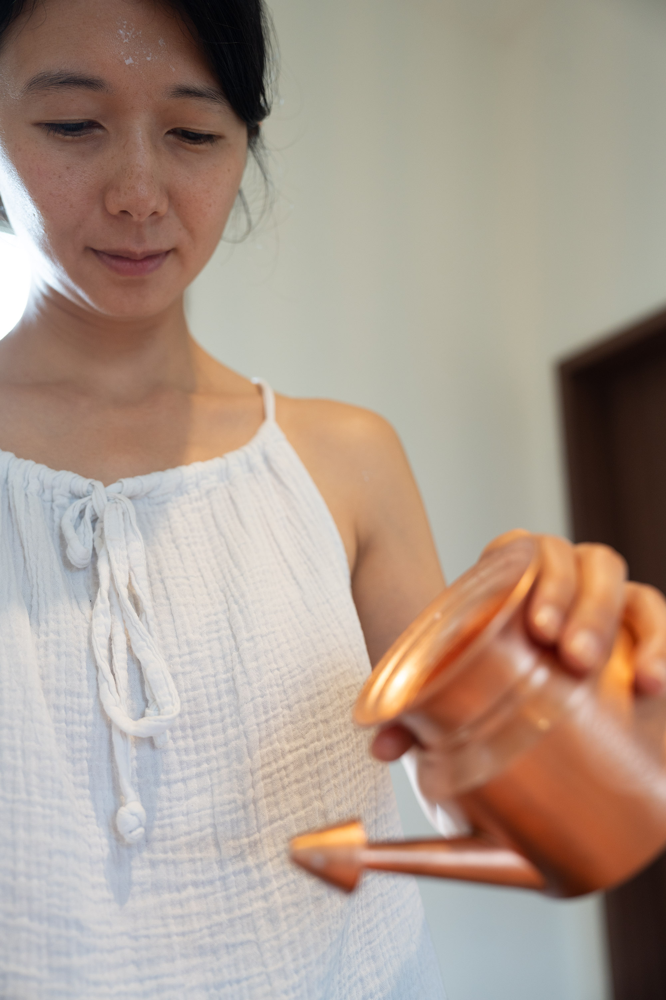

五千年印度傳統療癒系統 × 陪產員的身心整合視角
為產後媽媽與所有渴望被深深承接的女性
這套源自印度喀拉拉邦的傳統療癒系統，最初是為產後母親設計，但同樣適用於所有想深度調養身心、回到自己身體的女性。
不論自然產或剖腹產，特別適合產後 42 天黃金期內。修復子宮、安撫產後焦慮、改善睡眠與哺乳期身心狀態。
經期不順、經痛、PMS、骨盆腔循環不佳、慢性疲倦、長期壓力導致的內分泌失調，都適合用阿育吠陀的方式深層調養。
長期焦慮、失眠、思緒停不下來、覺得「身體不是自己的」——阿育吠陀稱這種狀態為 Vāta 過盛，溫油按摩是最直接的解方。
備孕期希望調理體質、滋養生殖系統、安頓情緒的女性。讓身體在最好的狀態迎接新生命。
「妳照顧了所有人，
那麼，誰來把妳重新接回自己的身體？」
阿育吠陀（Āyurveda，生命的智慧）視女性身心為一個會循環、會記憶的整體。經期、生產、更年期、長期壓力——每一個重要的生理事件，都會留下身體層面的印記。如果沒有被好好處理，這些印記會堆積成失眠、焦慮、慢性疲倦、婦科問題。
產後六週被稱為 Sutika Kala（蘇提卡卡拉）——母親身體與情緒復原的黃金期。但即使不在這個窗口裡，所有女性身上的 Vāta（瓦塔，風能）都很容易過盛——這是身體裡負責「流動、變化、神經傳導」的能量，現代女性的快節奏生活、過度思考、產後激素變化，全都會把它推到失衡狀態。



三個片刻 · 從目光、溫油、到承接
這套源自喀拉拉邦的傳統系統，結合按摩、藥草薰蒸、藥草浴三大主軸，目的只有一個——讓妳重新住回自己的身體。
單次體驗為純按摩（Abhyanga）；完整套組則加入藥草薰蒸與藥草浴，三者協同作用，效果遠超單一療法。

Abhyanga 不是表層的撫觸，而是讓溫油與雙手一起被身體吸收。當妳閉上眼睛、肌肉一點一點交付出來，那是身體在說：「終於有人替我接住了。」
古法製作的藥草浸泡油（非精油），溫熱後從頭至腳深層按入。直接安撫失序的神經系統，是整套療程的核心，也是單次體驗的主要內容。
溫和的藥草蒸氣作用於會陰與骨盆腔，幫助子宮收復、惡露排淨、會陰傷口癒合。非產後女性使用則能改善經期不順、經痛、骨盆腔循環。是許多文化傳統共有的女性療癒智慧。
喀拉拉邦傳統的整體浸浴，藥草煮成的溫熱水，由頭至腳全身淨化。讓肌膚、毛孔、淋巴一起呼吸，按摩後使用效果加倍。
第一次接觸阿育吠陀，建議從入門體驗開始；如果妳已經清楚自己需要深度修復，完整套組是最完整的選擇。
⏱ 標示的是療程本身的時間。前後的身心諮詢、更衣與休息另需 30–50 分鐘，請預留充裕的時間給自己。
✨ 每一個方案都包含 Shirodhara（眉心淋油）——溫油細細落在眉心正中央的那段時間，是阿育吠陀最深的一種休息。創始客戶回饋裡被提到最多次的，就是這一段。
💫 北投工作室無額外費用｜到府車馬費依距離：台北市與鄰近免費–NT$200、大台北 NT$300–500、外圍（淡水・新店・汐止・林口）約 NT$600、桃園‧新竹 NT$1,000｜假日 / 夜間 +NT$500
這套療程在台北開始的時候，我邀請了最初的 10 位妳，成為創始客戶。
後來走進來的，比我原本設想的還多——這段路上，一共有 16 位女性讓我把手放在她們身上，
並且願意誠實地告訴我，哪裡好、哪裡還可以更好。
這份信任把這個服務養大了。創始期到此圓滿，台北的療程回到定價。
而妳們的話留了下來，就在下面。
給錯過的妳：定價本身就已經包含完整的諮詢時間與 Shirodhara（眉心淋油）。
沒有少給任何東西，只是不再有創始價。
溫暖、安靜、有完整器具的療癒空間。
適合想離開家、給自己一段獨處時光的妳。
產後媽媽出門不易，可請我帶器具到妳家。
大台北地區可服務，依距離酌收交通費。
每一段都來自真實走過這趟調養的女性，皆經本人同意分享，並依各自的授權呈現（具名／暱稱／匿名）。
是被淋油在眉心的當下，觸動了神聖的第三眼開關。在靜默之中，有一種深深被一波波浪潮沖刷的感覺，彷彿花瓣一片片綻開、釋放。
我覺得如果可以，每個女人都應該每個月被這樣好好滋養一次。不急不忙，就好好留一天給自己，然後透過這樣輕柔、有愛的按摩，為身體注入新的體感——「我值得這樣花時間好好呵護自己」。
謝謝妳這麼照顧媽媽和寶寶的身心。讓寶寶能在陌生的環境下安心睡著，媽媽也才能好好放鬆。
過程是很輕柔的手法，但可以感受到欣妙是很有「意識」地在進行。這是我第一次體驗到輕柔，也可以有深層的放鬆。
透過欣妙溫柔的聲音與觸碰，身體變得平靜敞開，靈魂也終於得到了好好的、深刻的休息。
按摩不只是技術，施作者本身的能量也很重要。Milliya 有種讓人可以安心交託的氣質，引導很溫柔，結束後會有一種穩定紮根的力量。
眉心滴油舒緩了我的思慮，交感神經得到放鬆，有一種很深沉的安穩感，晚上也特別好睡。
可以感受到被溫油包覆、被守護的力量。
創始期共 16 份回饋（台北 14・日本 2） 平均滿意度 9.2 / 10 平均推薦意願 9.2 / 10

我是 Milliya，孕產教育的陪產員、女性身心靈整合教練。
這幾年陪伴過許多位女性走過生產，我發現「生產」這件事真正的考驗，不在那十幾個小時的產程，而在產後那段「沒有人真的問過妳好不好」的四十二天。也不只是產後——許多女性在月經、備孕、長期壓力中，也一直在經歷類似的「沒被深深承接」的狀態。
我自己學阿育吠陀，是因為它給了我一套完整的語言——把「我覺得身體空空的」這種說不清的感受，連結到一個有五千年積累的療癒系統。它不是另一種 SPA，而是一套真正回答「為什麼會這樣」、並且給出具體做法的智慧。
結合陪產員的視角、女性身心靈整合的訓練，加上 2026 年 5 月於花蓮 Ganesha Space 完成的阿育吠陀產後按摩護理實務營——我把這套系統帶回台北，給妳。
不是因為我比月子中心更會照顧妳，而是因為這個年代的女性，需要更多種被承接的方式。